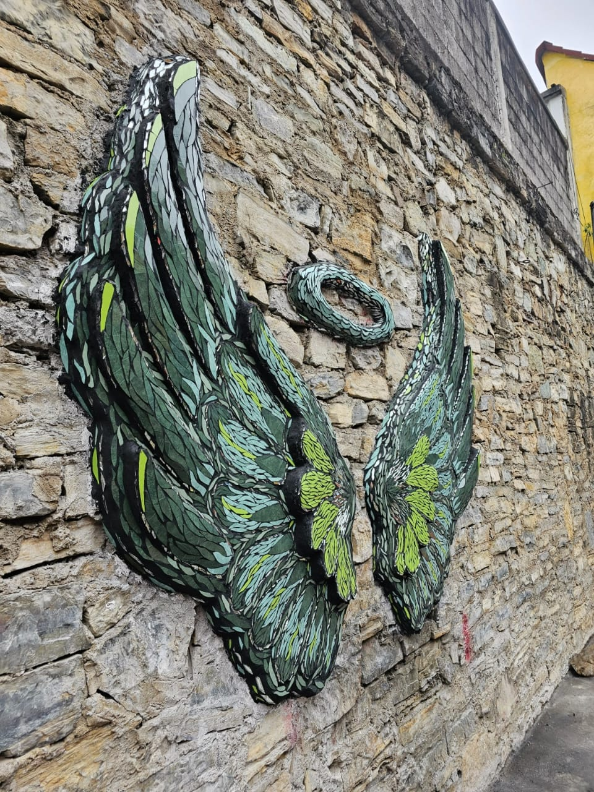

Historia
Proyectos
300 años por ser Zacatlán de las Manzanas
Vivir en el univero Náhuatl
Zacatlán de mis recuerdos
La Vida Eterna
México Lindo y Querido
De Zacatlán para el Mundo
Productos
Fotografías
CONTENIDO 1

CONTENIDO 2
CONTENIDO 3
CONTENIDO 4